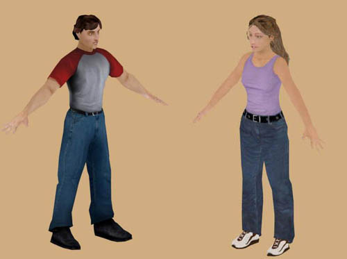
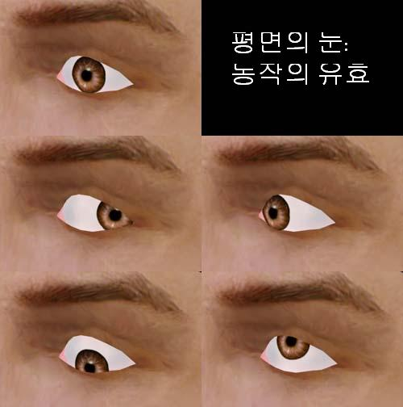
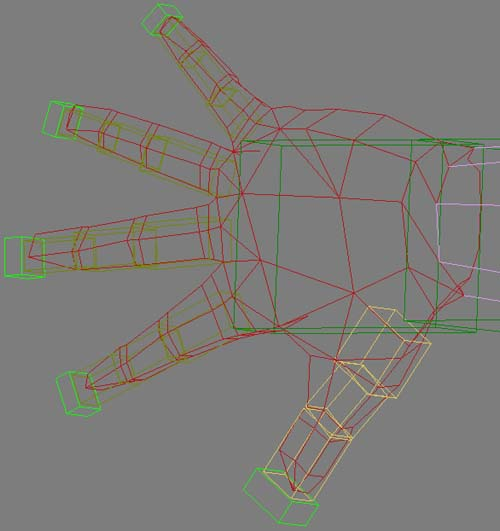
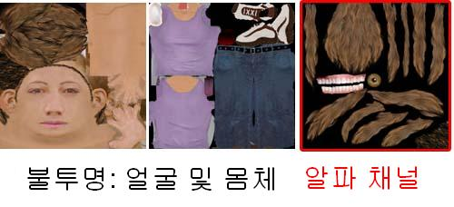
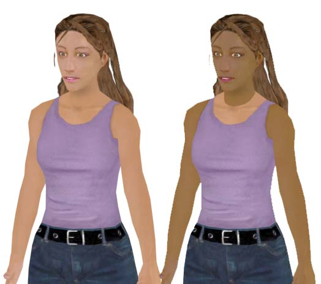
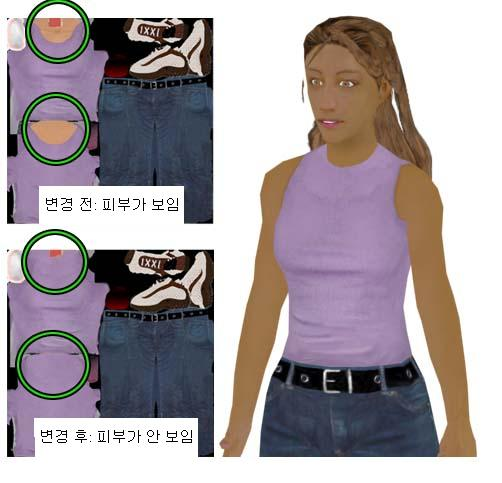

UDN
Search public documentation:
UnrealDemoModelsKR
English Translation
日本語訳
Interested in the Unreal Engine?
Visit the Unreal Technology site.
Looking for jobs and company info?
Check out the Epic games site.
Questions about support via UDN?
Contact the UDN Staff
日本語訳
Interested in the Unreal Engine?
Visit the Unreal Technology site.
Looking for jobs and company info?
Check out the Epic games site.
Questions about support via UDN?
Contact the UDN Staff
Unreal Engine 용 모델의 예
문서 요약: UDN 의 남녀 모델을 위한 캐릭터를 디자인하거나 작성할 때의 디자인 선택 방법과 빠지기 쉬운 함정에 대해 설명합니다. 초보자나 중급자들에게 알맞습니다. 문서 변경 내역: 최종 업데이트 Tom Lin (DemiurgeStudios?) – 문서 요약 섹션에 대해. 원저자 Tom Lin (DemiurgeStudios?).목표

이 모델들에 대한 목표는 다음과 같습니다:- 이 모델들이 게임의 중심 인물이 된다.
- 사실적으로 균형이 잡혀있어야 한다.
- 완전 립싱크를 할 수 있도록 한다.
- 관절이 완벽하게 갖추어진 손을 가진다 (수화를 할 수 있다).
- 현대식 PC 및 콘솔의 게임 내 환경에서 사용할 수 있어야 한다.
- 현세대는 물론 차세대 하드웨어에도 적합하도록 충분한 폴리곤 수를 가진다.
모델링
모델링 과정을 시작하기에 앞서, 저 자신에게 디자인에 대한 몇 가지 질문을 해보았습니다.- 몇 개의 폴리곤을 가지고 작업할 것인가 ?
- 모델이 어떤 스타일을 가질 것인가 ?
- 게임 장면에서 모델들이 복제될 것인지, 아니면 한 번만 등장할 것인지 ?
- 모델의 어느 부분이 가장 많은 시선을 끌게 될 것인가 ?
눈
모델의 눈에는 평면 폴리곤 시트를 사용했습니다. 이것은 시선 추적이 요구되는 눈을 작성하기 위해 폴리곤을 효율적으로 사용하는 방법입니다. 더 자세한 설명은 모델링 가이드 문서를 참고하십시오.
위의 이미지는 시트 방법으로 가능한 동작의 범위를 보여줍니다. 이 방법에서 가장 어려운 점은 눈의 홍채를 제어하는 뼈를 배치하기에 가장 적합한 장소를 찾는 것입니다. 뼈의 기초를 정확히 배치하는 것은 아주 아주 중요한 일입니다. 눈이 움직이는 범위 전체에서 홍채의 곡선이 흰자위의 곡선과 일치해야 합니다. 이를 위해서는 리깅 및 모델 자체에 대해 자잘한 미세 조정 작업을 상당히 많이 해야 할 것입니다.손
손은 많은 양의 동작이 요구되기 때문에 (수화를 할 수 있어야 함), 총 폴리곤 가운데 매우 큰 몫을 차지합니다. 모델 하나의 전체 폴리곤 수가 약 4400 인데, 손 하나에 대략 420 개가 사용됩니다. 양 손이 완전한 모델의 약 20% 를 차지하는 것이므로 상당히 큰 몫입니다.
위의 그림에서 보면 각 손가락 관절의 주위에 두 개씩의 체절이 있습니다. 이것은 손가락을 구부렸을 때의 변형을 최소화하기 위해 중요한 부분입니다. 제가 이다음에 또 모델을 작성하게 된다면 손에 리소스를 더 많이 배정할 것입니다; 주먹을 쥐었을 경우의 손마디가 분명하게 정의되어 있지 않으며, 엄지 손가락이 손에 합쳐졌을 때 더 많은 도형을 사용할 수 있어야 할 것입니다.발
저는 발을 만들 때 몇 가지 실험을 해 보았습니다. 이에 대해서는 모델링 가이드 문서에서 설명했습니다. 게임에서 보는 관점은 ‘정상적인’ 인간의 신체 비율이 잘못된 것처럼 보이게 합니다. 특히 카메라가 흔히 캐릭터의 뒤쪽 위에서 모델을 내려다보는 발의 경우가 그렇습니다. 이 효과를 상쇄하기 위해, 저는 남자 모델의 발을 보통보다 훨씬 크게 만들었습니다. 여자의 발은 보통 크기로 하여 이 두 크기의 타당성을 평가하는 일이 가능하도록 했습니다.
매핑/텍스처 만들기
모델의 텍스처 만들기는 아주 간단합니다. 그렇지만 알파 및 레이아웃 문제 몇 가지를 염두에 두어야 합니다.알파 텍스처된 삼각형의 교차
UnrealEd 의 텍스처링에서 가장 중요한 점은 "알파 텍스처된 삼각형들을 교차하지 않는다"는 규칙입니다. 이에 관한 자세한 설명은 텍스처링 가이드? 문서를 참고하십시오. 한 마디로, 알파 채널이 있는 텍스처를 가진 두 삼각형이 서로 교차할 경우, Unreal 은 혼동이 됩니다. 이는 한 삼각형이 다른 삼각형 위로 ‘튀어’ 나왔다 다시 들어갔다 하는, 보기 흉한 그리기 순서 관련 문제를 낳게 됩니다.텍스처의 크기와 수
저는 각 모델에 3 개씩의 텍스처를 만들었습니다. 이 가운데 두 개는 같은 크기로, Unreal Tournament 2003 에서 기본으로 사용하는 1024x1024 입니다. 세 번째 텍스처 맵은 알파 채널에서 투명성이 요구되는 모델의 부분들을 위해 남겨 두었습니다. 이러한 구분으로 불투명 텍스처를 24 비트 절약할 수 있어서 메모리가 다소 절약되며, UnrealEd 에서의 알파 설정에 곤란을 겪고 있는 사람들에게도 도움이 됩니다. 이 세 번째 텍스처는 여자 모델의 것이 남자 모델의 것보다 큽니다; 여자의 모발에 텍스처 해상력이 더 필요하기 때문입니다.
위의 이미지에서 보면 알파 텍스처 맵에는 모발, 이, 그리고 눈이 들어 있습니다. 다른 텍스처 맵에는 얼굴, 팔을 비롯하여 모발의 기본 레이어 등 모델의 견고한 부분들이 들어 있습니다.바꿀 수 있는 의복 및 피부
이 주제는 꽤 직선적이지만, 약간 미묘한 부분이 있습니다. 항상 염두에 두어야 할 일반적인 규칙은, 서로 다른 텍스처 사이에 교환하는데 완전한 유연성을 가지고 싶다면, 피부 색조가 들어있는 삼각형들이 하나의 텍스처에 제한되어 있도록 하고, 의복 삼각형은 모두 다른 텍스처에 있도록 하는 것입니다. 한 번에 피부를 모두 바꿀 수 있는 남자 모델이 이 기법의 예입니다. 그렇지만, 여자 모델의 현재 텍스처에서 위와 비슷한 일을 하려고 하면 금방 문제에 부닥칩니다.
그렇지만, 여자 모델의 현재 텍스처에서 위와 비슷한 일을 하려고 하면 금방 문제에 부닥칩니다.

의복 텍스처를 서로 교환할 수 있는 것으로 만들고 싶다면, 다시 의복 텍스처에 가서 여자 모델의 셔츠가 목까지 끌어올려지도록 해야 합니다.
위의 그림에서는 여자 모델의 의복 텍스처가 변경되어 다른 피부와 완벽하게 교환될 수 있게 되었습니다. 이처럼 텍스처들 사이의 삼각형 구분을 상관하지 않는다면, 이 해결 방법에는 아무런 문제가 없습니다. 그러나 많은 모델들은 다양한 텍스처들을 잘 수용할만큼 충분한 유연성을 가지고 있습니다. 예를 들면, 이 여자 모델에 하이칼라를 입힌 것이 보기 좋지만, 원래의 목이 파인 셔츠를 입혔을 때도 보기 좋습니다. 텍스처를 교환할 수 있게 하고 (그리고 텍스처 메모리를 절약하고) 싶은데, 의복에 약간의 피부를 넣고 싶다면 어떻게 하시겠습니까? 한 텍스처에서 다음 유니폼에 걸쳐 기꺼이 같은 피부 색조를 사용하겠다면, 교환이 가능한 피부를 얼마든지 원하는대로 만들 수 있습니다. 아래의 그림은 이것의 예입니다; 머리는 완전히 서로 다른 텍스처 맵을 사용하지만, 피부 색조는 같은 것을 사용하기 때문에 목 부분에 앞에서 본 것같은 시각적 거슬림이 없습니다.
뼈/감싸기
UDN 모델들에 대해 저희는 애니메이션 목적에서, 캐릭터 스튜디오를 사용하기로 했습니다. 이미 만들어진 이 구조에 저희 고유의 뼈를 추가로 부착하여 사용하는데, 가외의 뼈들은 모두 얼굴 및 머리 지역에 추가되었습니다. 얼굴 뼈의 완전 목록은 SkeletalSetup 문서에 실려 있습니다. 저희는 여러가지 이유에서 모델간의 애니메이션 데이터를 공유하지 않기로 하고 있습니다. 첫째, 남자 모델과 여자 모델은 현저하게 크기가 다릅니다. 둘째, 모델들의 머리가 똑같은 뼈 계층구조를 공유하지 않습니다. 끝으로, 저희는 매우 섬세하고 정밀한 애니메이션 프레임을 만들기 때문에 (립싱크 능력을 위한 얼굴 조정) 이 둘을 서로 순응시키려고 하는 것은 현명하지 않은 것으로 간주됩니다. 이는 각 모델이 고유의 .PSA 파일을 가져야 한다는 것을 의미하는데, 이것은 애니메이션의 양에 따라 낭비가 될 수도 있습니다.모델 및 뼈대 교환하기
이 문서에서는 자신의 게임 시연 등에 사용하기 원하는 분들을 위해 UDN 모델을 제공합니다. 이 모델들은 리깅과 함께 제공되지만, 여러분은 이 리깅을 바꾸거나 모델을 기존의 뼈 구조에 순응시키고 싶을지도 모릅니다.UDN 모델 사용하기
UDN 모델에 새 리깅을 사용하고 싶다면, 간단히 그렇게 할 수 있습니다. 뼈대가 얼마나 복잡한지에 따라 혀, 홍채 등 모델의 기능을 무시해버릴 수도 있습니다. 이 모델을 자신의 필요에 맞도록 다소 변경하고 싶어질 수도 있습니다. 예를 들어 손을 제어하기 위한 뼈가 한개만 할당되어 있을 경우, 손가락들이 그냥 쫙 벌어지는 대신 좀더 유연하고 자연스럽게 되도록 다시 배열하고 싶을 것입니다. 자신의 뼈대를 UDN 모델에 맞도록 바꿀 때, 커다란 변경은 모델이 이상하게/빈약하게 애니메이트하는 원인이 된다는 점을 명심하십시오. 당연한 말이지만, 그래도 감싸기, 정점 무게주기 및 관련 리깅 등을 해야 합니다.UDN 리깅 사용하기
새 모델에 UDN 리깅을 사용하고 싶다면 기존 애니메이션의 세트를 이용할 수 있지만, 순조롭지는 않습니다. 리깅 효과의 일부만 (예: 입/혀의 음운 없이 눈 애니메이션만) 사용하고자 할 경우, 새 리그/뼈에는 UDN 모델에 포함되어 있는 뼈들을 모두 포함하지 않아도 된다는 것이 그나마 다행한 일입니다. 이것은 뼈의 브랜치를 삭제한다거나 브랜치 전체를 작성하지 않아도 Unreal 이 여러분의 모델을 문제 없이 가져오기 한다는 것을 의미합니다. UDN 리깅을 사용하는 데는 다음 몇 가지 옵션이 있습니다 .- UDN 모델과 크기, 모델 및 신체 구조가 매우 비슷한 모델을 만듭니다. 그 다음 새 모델의 해당 부분들을 대충 같은 방법으로 연결합니다.
- 완전히 새로운 사람을 만들어서 UDN 모델의 뼈들과 같은 이름을 가진 뼈의 구조를 작성합니다. 이때 UDN 리그의 구조를 그대로 복제할 필요는 없지만, 애니메이션을 보존하고 싶다면 뼈의 이름들이 반드시 UDN 리그의 뼈 이름들에 상응해야 한다는 것을 기억하십시오.
- 기존의 리깅을 고수하면서 UDN 모델 자체를 변경해볼 수도 있습니다. 아무것도 없는 상태에서 무엇인가 새로 만드는 대신, 구 모델을 새 형체를 만드는 ‘찰흙’으로 삼아서 모델을 뜯어 고치는 것입니다.
첨부 파일들
이 문서의 말미에는 여러 개의 zip 파일들이 있습니다. 여기에는 UDN 모델을 만드는데 사용된 모든 소스 파일들을 비롯하여,모델들을 UnrealEd? 에 직접 가져오기 하는데 사용할 수 있는 .PSK 와 .PSA 파일들이 포함되어 있습니다. 다음은 그 콘텐츠의 명세입니다:- UDNMale.zip: 리그된 .max 모델, .PSA 및 .PSK, 그리고 3DS Max 에서 볼 수 있는 3 개의 텍스처가 들어 있습니다.
- UDNFemale.zip: 리그된 .max 모델, .PSA 및 .PSK, 그리고 3DS Max 에서 볼 수 있는 3 개의 텍스처가 들어 있습니다.
- UDNMaleSourceAnims.zip: 애니메이션/ viseme 세트를 구성하는 모든 소스 .max 파일들입니다. 주의: 파일 사이즈가 매우 큽니다.
- UDNFemaleSourceAnims.zip: 애니메이션/viseme 세트를 구성하는 모든 소스 .max 파일들입니다. 주의: 파일 사이즈가 매우 큽니다.
- UDNMapping.zip: UDNMale.zip 과 UDNFemale.zip 에서 제공된 텍스처 맵들의 레이아웃입니다.